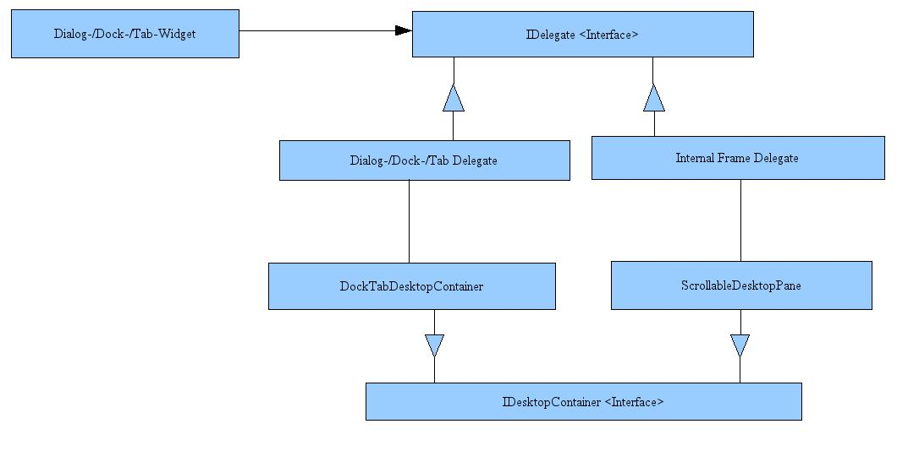

New User Interface Layout in SQuirreL 3.0 / Dec. 25. 2008
SQuirreL 3.0 will be the next SQuirreL version after the 2.6.x versions. Here we will focus on a single change in SQuirreL 3.0. A complete overview of all changes can be found in our change log.
With SQuirreL 3.0 we introduce a new user interface layout as shown in the screenshot below.
The new user interface comes closer to what is known of modern applications like Eclipse or Netbeans. Those who still prefer the old MDI / Internal Frame layout the can switch layouts in SQuirreL's Global Preferences.
SQuirreL 3.0 is planned to be released to the end of January 2008 and will require JRE (1.)6.
From Dec. 25. 2008 on the new layout will be available in SVN and in weekly snapshots. JRE (1.)6 will be required from that date on.
Some technical information for developers
To be able to work with the new user
interface layout direct usage of JInternalFrames had to be replaced
by an abstract layer. To do so the concept of “Widgets” was
introduced in SQuirreL:
In former times developers either derived
from JInternalFrame or created JInternalFrame instances. Now they need to either
derive from or create instances of one of the Widget classes.
There are three different Widget classes:
DialogWidget (e.g. Session Properties)
DockWidget (e.g. Aliases)
TabWidget (e.g. Session)
The Widget abstraction layer is essential to allow the user to choose if he wants to use SQuirreL in the old Internal Frame/MDI layout or the new tabbed layout.
The class diagram below gives a bit of a technical background:

Dialog-/Dock-/Tab-Widgets use delegates to work on the given user interface layout. When a Widget is added to a DesktopContainer the DesktopContainer gets hold of the delegate inside the Widget and uses this delegate for display. A factory that creates the DesktopContainer as well as the delegates takes care that DesktopContainer and delegates match.
Any Plugin developer who does not host his plugin in our SVN repository will have inherit from one of the three Widget types instead of JInternalFrame. (In most cases DialogWidget will be the right choice.)
Before the new UI-Layout was committed a tag named “beforeTabLayout” was created in SQuirreL's SVN repositiory.